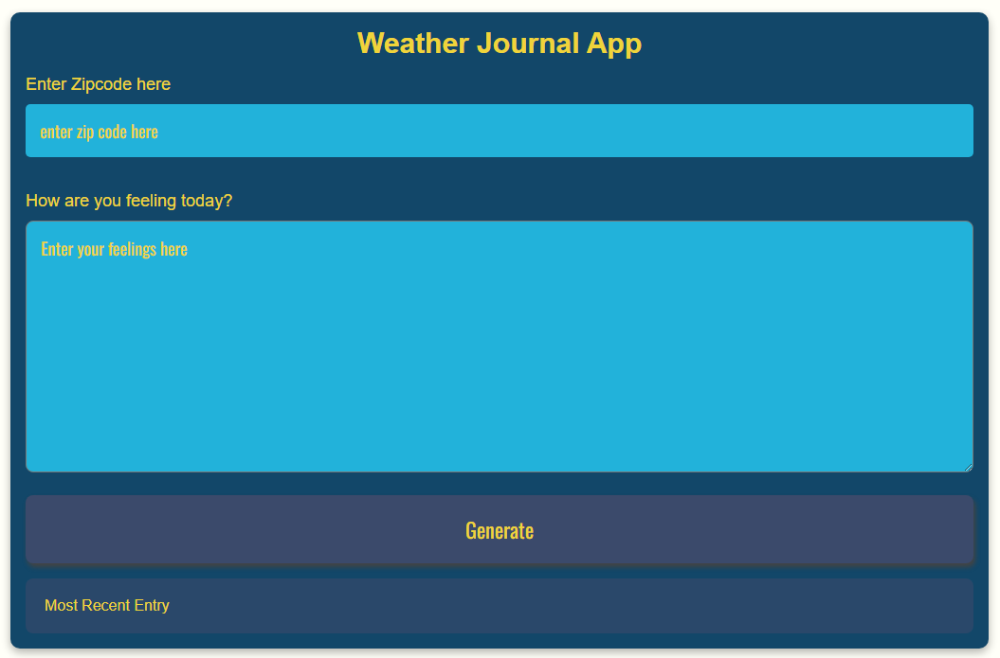
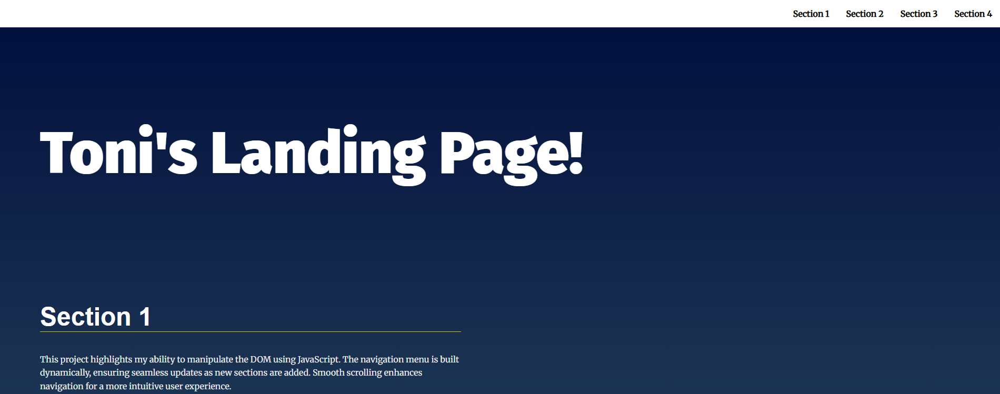

Projects
Weather Journal App

A simple app that fetches weather data using an external API and updates the UI dynamically using JavaScript.
Tech Used: HTML, CSS, JS, OpenWeatherMap API, Express
GitHub Live DemoLanding Page

A responsive landing page built from scratch using semantic HTML and modern CSS techniques. This project emphasizes clean layout design, smooth navigation, and consistent styling to create an engaging first impression for users.
Tech Used: HTML5, CSS3, Flexbox, Grid, Media Queries
GitHub Live DemoJavaScript
Skilled in DOM manipulation, event handling, asynchronous functions
(async/await, Promises), and building dynamic user interfaces.
Responsive Web Design
Fluent in CSS Flexbox, Grid, and media queries to ensure seamless
user experiences across all screen sizes.
Version Control
Experienced in branching, pull requests, commits, and collaboration
workflows for clean project management in Git & Github.
APIs & Fetching Data
Confident working with REST APIs, handling fetch requests, parsing
JSON, and updating the DOM dynamically.
UI/UX Principles
Focused on creating user-friendly layouts with attention to
accessibility, visual hierarchy, and smooth interaction.
Node.js & Express
Able to build lightweight backend servers, set up routes, and
connect front-end to server logic using Express.
Sass & Bootstrap
Experienced using Bootstrap’s utility classes and
Sass for organized, modular, and scalable CSS. Strong
focus on clean and responsive styling.
React
Comfortable using React to build component-based UIs,
manage state, and create dynamic single-page applications
with reusable logic."